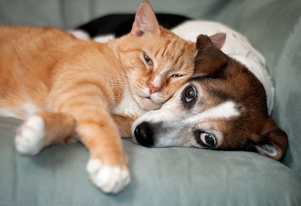

¿Encontraste una mascota?
Si encontraste una mascota sin dueño, acá podes subir información sobre
ella para ingresarla a nuestra base de datos. ¡Nosotros nos encargaremos
de ubicarla en el mapa y hacerte llegar información si su responsable la
encuentra por este medio!
